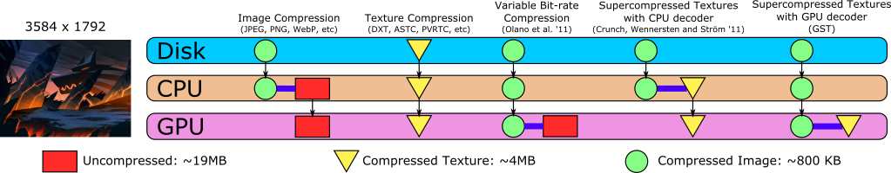
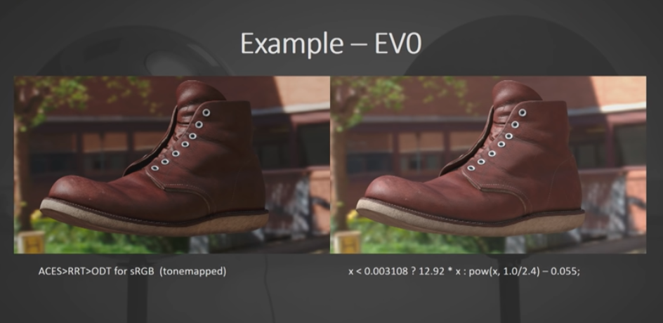
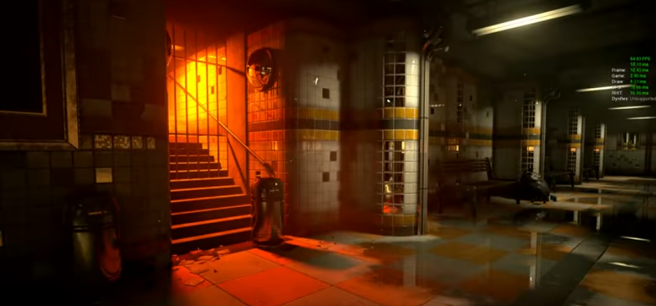
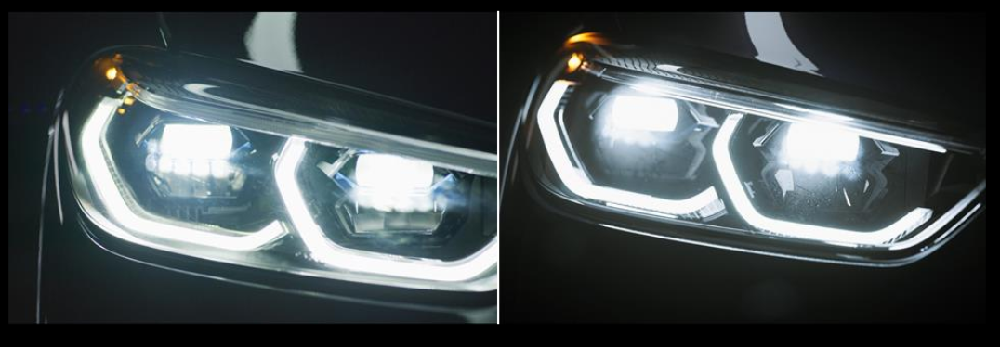
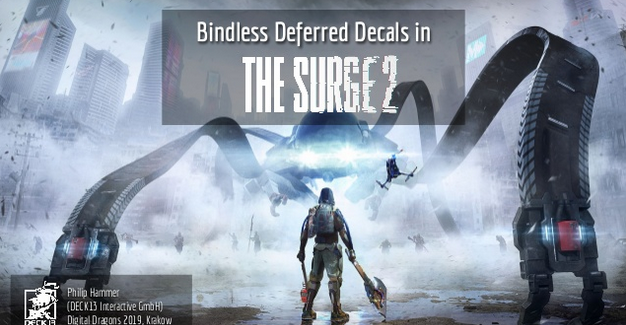
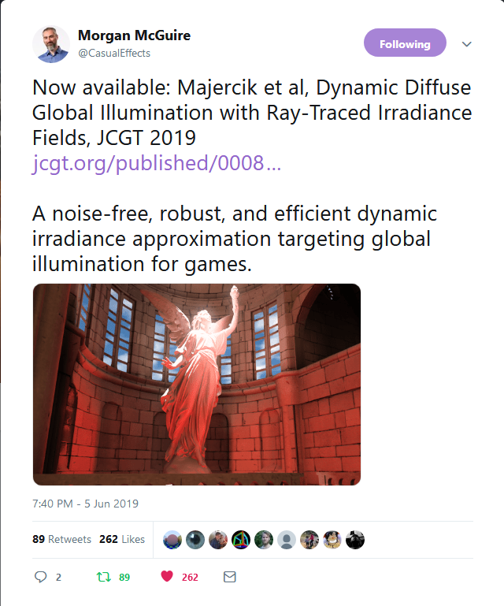

What's new in graphics
June 2019
Rosario Leonardi @ilMal3 12/6/2019
Me!Rosario Leonardi |
 |
|
Researcher at Sony-Interactive-Entertainment. Ideas are my own. |
|
Next-Gen console revealed
PlayStation®
Xbox
Microsoft published Dx12 specs
Used for VR or to draw different passes at different rates
Binomial Open-Sourced Basis
Conferences!!
Tons of them! (3)
Unreal fest
10th - 12nd April, PragueColour management: A bird's eye view for digital artists
UE4 Raytracing for games
Digital Dragon
18th - 19th May, Krakow
Leveraging Raytracing HW acceleration in Unity
Bindless deferred decals in the Surge 2
Vulkanised 2019
May, 22nd in Cambridge
Optimising a AAA vulkan title on desktop
SPIRV-Cross: Taking SPIR-V to the next level
Nordic Games
May 22nd - 24th, Malmo
Triangles are precious
Global diffuse illumination
More in depth discussion, now with code.

Volumetric path tracer
Sergen Eren
Model View Projection
SIGGRAPH 2019: Technical Papers Preview
Did you updated your driver?
nVidia release driver for enable raytracing on Pascal